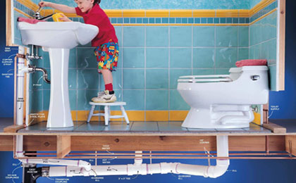
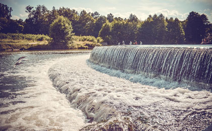

Виды деятельности
Водоснабжение
Современная система водоснабжения г. Минска включает в себя 11 станций водозабора артезианских источников, распложенных как в черте города, так и за его пределами и одну станцию подающую воду из открытого водоисточника. Водозаборы подземных вод включают в свой состав группы скважин подающих воду по сборным водоводам в резервуары ...
Вода из артезианских источников подается потребителям без очистки и, как правило, без обеззараживания. Хлорируют ее лишь летом, в качестве профилактики. Вода же из поверхностного источника (Вилейско-Минской водной системы) проходит полный цикл очистки. Для очистки поверхностных вод в 1978 году была построена первая очередь очистной водопроводной станции (ОВС). Сегодня ОВС ежедневно подает в водопроводную сеть города до 200 тыс. куб.м переработанной высококачественной воды.
Контроль качества воды г. Минска осуществляется в соответствии с «Рабочей программой производственного контроля качества природной и питьевой воды г. Минска на период 2011-2015 гг.» (Согласована Главным государственным санитарным врачом г.Минска, утверждена Первым заместителем председателя Минского городского исполнительного комитета). Рабочая программа разработана в соответствии с СанПиН 10-124 РБ99 «Питьевая вода. Гигиенические требования к качеству воды централизованных систем питьевого водоснабжения. Контроль качества».

Водоотведение
Перекачка и очистка сточных вод, поступающих в хозяйственно – бытовую канализацию города основная задача производства «Минскочиствод». В настоящее время канализационная система города представляет собой комплекс сложнейших наземных и подземных сооружений и коммуникаций, Минскую очистную станцию, современные сооружения по обработке осадка сточных вод ...
Очистные сооружения канализации города Минска состоят из двух производственных комплексов: МОС-1 и МОС-2. Первый из них – проектной мощностью 670м3/сут – был введён в эксплуатацию в 1963г. Второй комплекс сооружений, мощностью 100м3/сут, запущен в 2007 году.

Вилейско-Минская система
Среди искусственных водных объектов на территории Республики Беларусь особое место занимает Вилейско-Минская водная система (ВМВС), построенная в 1968-1976 гг. Это первый в республике крупный гидротехнический комплекс по переброске речного стока из бассейна Балтийского моря в центральную и далее в южную часть Беларуси, т.е. к бассейну Черного моря. В состав ВМВС входят восемь крупных ...
ЦРП Водосбыт
Для удобства жителей, производящих расчеты за услуги водоснабжения и водоотведения по индивидуальным водомерам создано четыре расчетных центра. Главный центр расчетов с потребителями, расположенный в новом административном здании по ул. Пулихова, 15а, принимает абонентов до 20 часов ежедневно, в субботу до 17.00 часов. Воскресенье выходной. Прием абонентов производится по принципу ...
Цех общественного питания
Цех общественного питания УП «Минскводоканал» это уютная столовая на 50 посадочных мест, расположенная в административном здании УП «Минскводоканал». У нас работают только профессиональные повара! Дополнительную информацию можно получить по тел. +375 17 294 61 63. Начальник цеха общественного питания: Боровская Татьяна Михайловна.